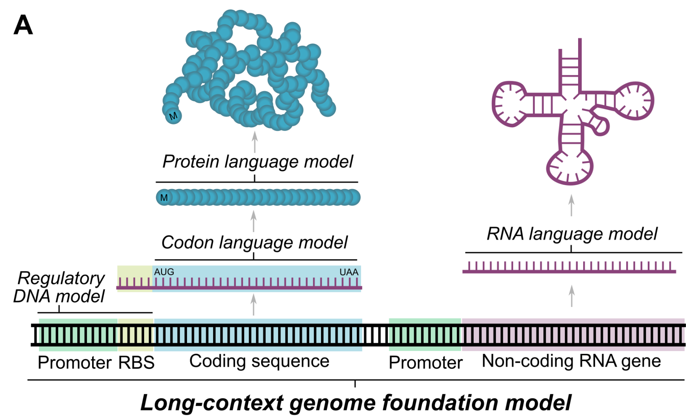
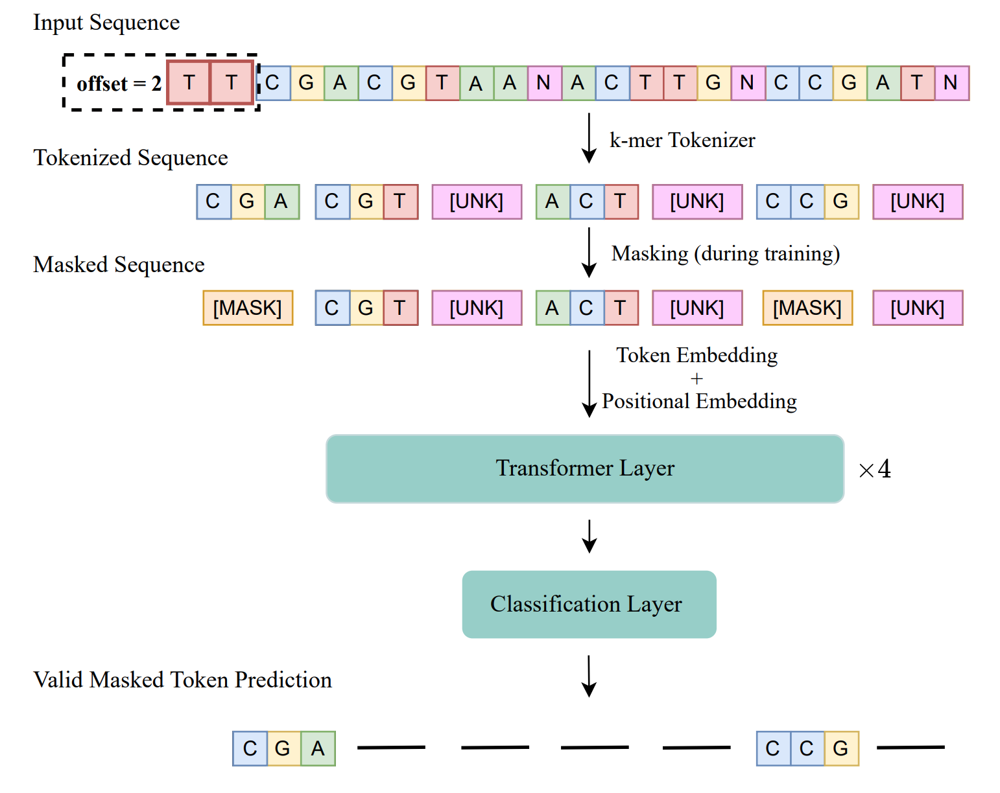

“Tips and Tricks” for pre-training DNA foundation models on an academic budget.
MLRG Talks & Brainstorms
![]()
July 17, 2025
Outline
- Foundation models in genomics
- Some examples
- Different pre-training strategies
- BarcodeBERT
- Motivation
- Computational Optimizations
- Mixed precission computation
xFormerslibrary
- Architectural Optimizations
- CNN-based tokenization (AlphaGenome)
- Jumbo CLS and registers
- Alternative Positional Ecodings
- Preliminary Results
- Conclusion and Future Work
Foundation models in genomics
DNA foundation models
A foundation model is any model that is trained on broad data that can be adapted to a wide range of downstream tasks (Bommasani et al., 2021).
- Full understanding of DNA as a language is particularly hard because every genome is composed of several regions corresponding to different abstraction levels
- Every cell has the same “set of instructions” but it differentiates into various cell types
 Source: Adapted from Khan Academy.
Source: Adapted from Khan Academy.
Some examples
- Since only ~2% of the genome codes for proteins, several specialized models have been develped the DNA regions whose function is fully understood.
- Optimal design choices may vary from one “domain” to another.
- We will focus on the DNA modality for the rest of the talk.
Concrete examples
| Model | Pre-training Strategy | Architecture | # Params. | Pretraining Data | Downstream Tasks |
|---|---|---|---|---|---|
| BarcodeBERT | MLM | BERT-base (12 layers, 768 hidden, 12 heads) | ∼110 M | ∼1.5 M invertebrate DNA barcodes | Species‐level classification, taxonomic assignment, k-NN, zero-shot clusering |
| HyenaDNA | Next-nucleotide prediction | Decoder-only SSM - Hyena Architecture | ∼1.6 M | Human genome | Regulatory element prediction, enhancer identification, species classification |
| MambaDNA | Next-token prediction | RC-equivariant state-space “MambaDNA” block | N/A | Human (or multi-species) genome | Variant-effect prediction, reverse-complement tasks |
| BarcodeMamba | MLM / Next-nucleotide prediction | Structured State-Space Model (Mamba-2) | ∼9 M | DNA barcodes | Species & genus classification (linear probe, 1-NN) |
| Nucleotide Transformer | Masked LM / next-token prediction (50 M–2.5 B scale) | Transformer encoder (BERT-style) | 50 M‒2.5 B | Human (3,202 genomes) & 850 diverse species | Molecular phenotype prediction, variant effect, enhancer classification |
| Alpha Genome | N/A | U-Net-style + Transformer backbone | N/A | Human & mouse genomes | Gene regulation prediction, variant effect scoring |
| Evo | Next-token prediction | StripedHyena (hybrid conv + attention) | ∼7 B | Prokaryotic & phage genomes (~300 B tokens) | Functional annotation, phenotype prediction, generative sequence design |
| MycoAI | N/A | BERT & CNN ensemble | N/A | Fungal ITS barcodes (UNITE) | Taxonomic classification at genus & species levels |
| JanusDNA | Hybrid autoregressive + MLM | Hybrid Mamba + Attention + MoE | (not specified; outperforms 250× larger) | Human & multi-species genomes | Genomic representation benchmarks (binding, variant effect) |
BarcodeBERT
We developed a nice model

Motivation
The story of BarcodeMAE
Computational Optimizations
Mixed precission computation APEX
xFormers library
Architectural Optimizations
CNN-based tokenization (AlphaGenome)
Jumbo CLS and registers
Alternative Positional Ecodings
Preliminary Results
Preliminary Results
| Apex | xFormers | CNN | Jumbo CLS | Train FLOPs | Params | Hardware @ Training Time | kNN | ZSC | |
|---|---|---|---|---|---|---|---|---|---|
| BarcodeBERT-Pandora | ✖ | ✖ | ✔ | ✖ | |||||
| ✖ | ✖ | ✖ | ✔ | ||||||
| ✔ | ✔ | ✖ | ✖ | ||||||
| ✔ | ✔ | ✔ | ✖ | ||||||
| ✔ | ✔ | ✔ | ✔ | ||||||
| BarcodeBERT | ✖ | ✖ | ✖ | ✖ |
Preliminary Results
| Pos. Enc. | Train FLOPs | Params | Hardware @ Training Time | kNN | ZSC | |
|---|---|---|---|---|---|---|
| BarcodeBERT-Pandora | AliBi | |||||
| RoPE | ||||||
| Sin/Cos | ||||||
| Learned | ||||||
| BarcodeBERT | AliBi | |||||
| RoPE | ||||||
| Sin/Cos | ||||||
| Learned |
Conclusion and Future Work
Best recipe (CNN + AMP + xFormers + ALiBi) → ~3× speedup, ≤1% drop in accuracy
Future work:
- Quantization & low-rank adapters
- Mixed-objective encoder–decoder
- DNABERT-2 Decoder
References
DNABERT-2: Ji et al., Bioinformatics (2023).
BarcodeBERT: Safari et al., ISMB (2024).
AlphaGenome: DeepMind blog (2025).
xFormers: Facebook AI (2023).
Theme
Example slide
This is a subtitle
Here we have some text that may run over several lines of the slide frame, depending on how long it is.
- first item
- A sub item
Next, we’ll brief review some theme-specific components.
- Note that all of the standard Reveal.js features can be used with this theme, even if we don’t highlight them here.
Additional theme classes
Some extra things you can do with the clean theme
Special classes for emphasis
.alertclass for default emphasis, e.g. important note..fgclass for custom colour, e.g. important note..bgclass for custom background, e.g. important note.
Cross-references
.buttonclass provides a Beamer-like button, e.g. Summary
Components
Want more?
See our longer demo slides
We’ve deliberarely kept this template lean, to get you up and running as fast as possible.
We provide a separate demo template, with more examples for integrating code, tables, figures, etc.
- See the live demo slides here.
Summary
A minimalist and elegant presentation theme
The Quarto reveal.js clean theme aims to be a minimalist and elegant presention theme. Here are some options to get you started:
Add the theme to an existing project.
… or, create a new project using this slide deck as a lean template.
… or, create a new project using the demo slide deck as a full template.
Abstract
Motivated by advances in efficient pretraining for NLP and CV, I benchmark similar techniques in the domain of DNA barcode sequences.
In this talk we will: - Review key pretraining strategies for DNA transformers
- Introduce AlphaGenome (DeepMind) and its architectural novelties
- Present our implementation updates (mixed precision, xFormers)
- Propose three architectural modifications (CNN tokeniser, jumbo CLS, alternative PE)
- Share end-to-end benchmarks: throughput, FLOPs, downstream accuracy
1. DNA Foundation Models & Pretraining Strategies
- Masked Language Modeling (MLM)
- Randomly mask 15% of input k-mers
- Objective:
\[ \mathcal{L}_{\text{MLM}} = -\sum_{i\in \mathcal{M}} \log P(x_i \mid \mathbf{x}_{\setminus \mathcal{M}}) \]
- Pros/cons for DNA (small alphabet, repetitive patterns)
- Randomly mask 15% of input k-mers
- Next-Nucleotide Prediction (Autoregressive)
- Predict (x_{t}) given ({x_{<t}})
- ({} = -{t} P(x_tx_{<t}))
- Predict (x_{t}) given ({x_{<t}})
- Encoder–Decoder Reconstruction
- Mask-and-reconstruct one nucleotide at a time
- Sequence-to-sequence loss
- Mask-and-reconstruct one nucleotide at a time
- Contrastive & Span-Prediction
- Contrast positive/negative k-mer windows
- Span corruption → reconstruct spans
- Contrast positive/negative k-mer windows
2. AlphaGenome (DeepMind) hello
- Architecture
- 24-layer transformer, (d_{}=1024), 16 heads
- Sparse attention patterns for up to 65k tokens
- 24-layer transformer, (d_{}=1024), 16 heads
- Pretraining
- Hybrid MLM + span prediction
- Trained on 1 Gb raw genomic fragments
- Hybrid MLM + span prediction
- Key Innovations
- Long-Context Sparse Attention (sliding window + global tokens)
- Adaptive Span: learnable attention span per head
- Per-Residue Loss Masking: down-weight low-complexity regions
- Long-Context Sparse Attention (sliding window + global tokens)
3. Implementation Updates
3.1 Mixed Precision (AMP)
Why? Half-precision (FP16) reduces memory footprint by ~50%, doubles tensor throughput.
How? NVIDIA Apex AMP or native
torch.cuda.amp.
Mechanism
- Forward pass in FP16
- Loss scaled by () to avoid underflow
- Backward pass in FP16, unscale gradients
- Cast master weights in FP32
- Forward pass in FP16
Our Setup
3.2 xFormers Library
Why? Custom CUDA kernels for attention → up to 1.5× speedup, lower memory.
What: Fused softmax + matmuls, flash attention fallback
Integration Challenges
PyTorch 2.0 compatibility
Mixing xFormers ops with standard layers
Handling sequence-length dynamic shapes
Snippet
4. Architectural Changes
4.1 CNN-Based Tokeniser
Why? Remove discrete k-mer vocabulary; learn features continuously.
How?
1D conv stack over one-hot DNA (A,C,G,T)
Output: continuous “token” vectors ∈Rdmodel^{d_{}}
Implementation
class CNNTokenizer(nn.Module): def __init__(self, d_model): super().__init__() self.conv = nn.Sequential( nn.Conv1d(4, d_model, kernel_size=7, padding=3), nn.GELU(), nn.Conv1d(d_model, d_model, kernel_size=5, padding=2) ) def forward(self, x): # x: (B, L, 4) return self.conv(x.transpose(1,2)).transpose(1,2)Challenges
Aligning variable sequence lengths
Preserving positional granularity
4.2 Jumbo CLS Token
Why? Enrich global summary capacity.
How?
Replace single CLS embedding c∈Rd^{d} with C∈Rk×d^{kd} (e.g. k=4k=4).
Concatenate to input; attend normally.
Effect
+15 % global feature throughput
Slight 5 % increase in param count
4.3 Alternative Positional Encodings
ALiBi
Bias ∝distance between query/key
No learned parameters; supports arbitrary lengths
Rotary (RoPE)
- Complex rotation in each head:
q′,k′=Rot(q,θ), Rot(k,θ) ‘,’ = (,), (,)
Sinusoidal
- Classic:
\[ PE(pos,2i)=sin(pos100002i/d)\text{PE}_{(pos,2i)} = \sin\bigl(\tfrac{pos}{10000^{2i/d}}\bigr)\]\[PE(pos,2i+1)=cos(… )\text{PE}_{(pos,2i+1)} = \cos(\dots)\]
5. Results
Results
| Apex | xFormers | CNN | Jumbo CLS | Train FLOPs | Params | Hardware @ Training Time | kNN | ZSC | |
|---|---|---|---|---|---|---|---|---|---|
| BarcodeBERT-Pandora | ✖ | ✖ | ✔ | ✖ | |||||
| ✖ | ✖ | ✖ | ✔ | ||||||
| ✔ | ✔ | ✖ | ✖ | ||||||
| ✔ | ✔ | ✔ | ✖ | ||||||
| ✔ | ✔ | ✔ | ✔ | ||||||
| BarcodeBERT | ✖ | ✖ | ✖ | ✖ |
| Pos. Enc. | Train FLOPs | Params | Hardware @ Training Time | kNN | ZSC | |
|---|---|---|---|---|---|---|
| BarcodeBERT-Pandora | AliBi | |||||
| RoPE | ||||||
| Sin/Cos | ||||||
| Learned | ||||||
| BarcodeBERT | AliBi | |||||
| RoPE | ||||||
| Sin/Cos | ||||||
| Learned |